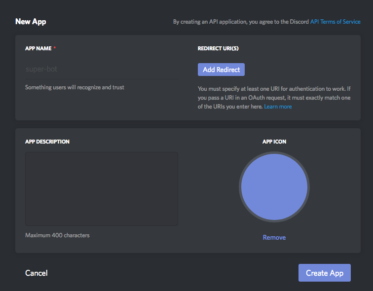
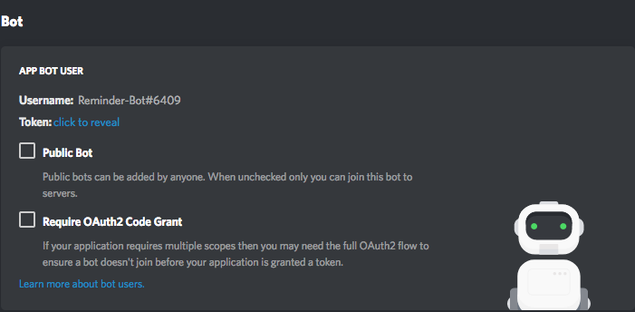
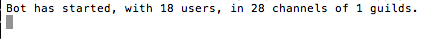

For the final project of our Intermediate Programming class, we were given what basically amounted to free reign over what our project was, so long as we fulfilled the project's requirements. I chose to make a Discord chat application bot that would help users remember things that they told it. In order to fit the project's goals, my bot would need to:
We were also permitted to work in teams if we so desired. I chose to work alone on this project, so the bot functionality was programmed by me using Node.js and the discord.js node module. I also made use of a nice webscraping library called shindan to help generate the bot's fortunes.
This bot runs using the Node.js runtime environment, so before anything else, make sure that you have Node.js installed on your machine. You will also need a Discord account.
I've included the node_modules folder containing each of the libraries the bot relies on in the GitHub repository for this program. so you should be able to simply download the files from there and move to the next section.
If any of the libraries are broken or missing, follow these steps:
Once you have downloaded the bot's files and have made a discord account, go to this link to access the Discord developers console. On the sidebar, click the "My Apps" link. It will ask you to log into your Discord account if you have not already done so. From this page, click the "New App" option. It will bring you to this page:
Fill out the information that it is asking for, then hit the create app button. Navigate over to the app that you have just created. In the options that are brought up, scroll down and find the option to make the app a bot user. It will say that this is irreversible, but don't mind the warning and click OK. There should now be this section in your options:
Click the "click to reveal" text next to token and copy the string of seemingly random letters and numbers. This is the token that will allow the bot to connect to Discord. In the folder containing the bot's files, find the config.json file and put this token in the token section between the quotes. Save the file. At this point, we are almost ready to start up the bot. All that is left to do is invite the bot into your server. Luckily, Discord has made a tool to simplify this process. In the options for your bot, there is something called "OAUTH2 Generator". Clicking this option will allow you to customize an invite link for your bot that gives it Discord permissions by default. Note: You may only invite the bot to servers where you have a certain level of Discord permissions.
Once the bot is successfully in, do the following:
Assuming that nothing has gone wrong, the terminal should look something like this:
// Load up the discord.js library, the snekfetch library, the file system library, and the shindan web-scraper
const Discord = require("discord.js");
const SnekFetch = require("snekfetch");
const Shindan = require("shindan");
const fs = require("fs");
// This is your client
const client = new Discord.Client();
// Load the config.json file that contains our token and our prefix values.
const config = require("./config.json");
// config.token contains the bot's token
// config.prefix contains the message prefix
// config.owner contains the bot owner's username
// Loads any logged messages and reminders.
const messagesJSON = require("./messages.json");
const remindersJSON = require("./reminders.json");
let logging = false;
let loggingChannel;
// Logs messages to be saved
function logMessage(username, content) {
messagesJSON.messages.push({
user: username,
message: content
})
}
// Saves logged messages
function saveSession() {
fs.writeFile("./messages.json", JSON.stringify(messagesJSON, null, 2), "utf-8", function(err) {
if(err) throw err;
console.log("Messages successfully updated.");
})
}
// Logs reminders and saves them
function logReminder(username, reminder) {
remindersJSON.reminders.push({
user: username,
message: reminder
})
fs.writeFile("./reminders.json", JSON.stringify(remindersJSON, null, 2), "utf-8", function(err) {
if(err) throw err;
console.log("Reminders successfully updated.");
})
}
// Returns a random integer between the minimum and maximum values specified
// this function includes the minimum and maximum as possible outputs
function getRandInt(min, max) {
return Math.floor(Math.random() * (max - min + 1)) + min;
}
// Gets a random element from an array
function getRandArrayValue(array) {
return array[Math.floor(Math.random() * array.length)];
}
// Shuffles an array's order and returns the new array
function shuffleArray(array) {
for (let i = array.length - 1; i > 0; i--) {
let j = Math.floor(Math.random() * (i + 1));
[array[i], array[j]] = [array[j], array[i]];
}
return array;
}
// This event will run if the bot starts, and logs in, successfully.
client.on("ready", () => {
console.log(`Bot has started, with ${client.users.size} users, in ${client.channels.size} channels of ${client.guilds.size} guilds.`);
client.user.setActivity("Helping you remember. | r!help");
});
// This event triggers when the bot joins a guild.
client.on("guildCreate", guild => {
console.log(`New guild joined: ${guild.name} (id: ${guild.id}). This guild has ${guild.memberCount} members!`);
client.user.setActivity(`on ${client.guilds.size} servers`);
});
// this event triggers when the bot is removed from a guild.
client.on("guildDelete", guild => {
console.log(`I have been removed from: ${guild.name} (id: ${guild.id})`);
client.user.setActivity("Helping you remember. | r!help");
});
// This event will run on every single message received, from any channel or DM.
client.on("message", message => {
// This makes the bot ignore itself and not get into a spam loop
if(message.author.bot) return;
// Logs messages in a set channel, regardless of if they have the prefix which is set in the configuration file
// It will only log messages in the channel where logging was started
if(logging && message.channel == loggingChannel) {
const username = message.author.username;
const messageContent = message.content;
// Ignores the logging command for logging purposes
if(message.content !== "r!log" && message.content !== "r!log clear") {
logMessage(username, messageContent);
}
}
// This ignores any message that does not start with the prefix which is set in the configuration file
if(message.content.indexOf(config.prefix) !== 0) return;
const args = message.content.slice(config.prefix.length).trim().split(/ +/g);
const command = args.shift().toLowerCase();
// Sets the bot's activity
if(command === "setbotactivity" || command === "sba") {
if(message.author.username !== config.owner)
return message.reply("You currently don't have permission to use this command.");
const botActivity = args.join(" ");
const activityMessage = botActivity + " | r!help";
message.delete().catch(O_o=>{});
client.user.setActivity(activityMessage);
}
// Logs and retrieves reminders
if(command === "reminder" || command === "remind") {
const author = message.author.username;
const mode = args[0];
let userReminders = [];
let tempString = "\n";
if(!mode) {
for(let i = 0; i < remindersJSON.reminders.length; i++) {
if(remindersJSON.reminders[i].user == author) {
userReminders.push(remindersJSON.reminders[i].message);
}
}
message.delete().catch(O_o=>{});
if(userReminders.length < 1)
return message.reply("You currently have no reminders.");
for(let i = 0; i < userReminders.length; i++) {
let remindText = userReminders[i];
tempString = tempString + "> " + remindText + "\n";
}
message.reply("Here are your reminders: \n" + tempString);
} else if(mode == "add") {
let reminderArray = [];
for(let i = 1; i < args.length; i++) {
reminderArray.push(args[i]);
}
let reminder = reminderArray.join(" ");
message.delete().catch(O_o=>{});
if(!reminder)
return message.reply("Please specify something to be reminded.")
logReminder(author, reminder);
message.channel.send("Successfully added " + author + "'s reminder.");
} else if(mode == "clear") {
for(let i = remindersJSON.reminders.length-1; i >= 0; i--) {
if(remindersJSON.reminders[i].user == author) {
remindersJSON.reminders.splice(i, 1);
}
}
fs.writeFile("./reminders.json", JSON.stringify(remindersJSON, null, 2), "utf-8", function(err) {
if(err) throw err;
console.log("Successfully cleared reminders for: " + author);
});
message.delete().catch(O_o=>{});
message.channel.send("Successfully cleared " + author + "'s reminders.");
} else if(mode == "flush") {
if(author !== config.owner)
return message.reply("You don't have access to this mode!");
remindersJSON.reminders = [];
message.delete().catch(O_o=>{});
fs.writeFile("./reminders.json", JSON.stringify(remindersJSON, null, 2), "utf-8", function(err) {
if(err) throw err;
console.log("Reminders successfully purged.");
});
} else {
message.delete().catch(O_o=>{});
message.reply("The mode you have specified is invalid. The mode can be `add`, `clear`, or `flush (Bot Owner Only)`.");
}
}
// Starts / Stops logging messages in a channel
if(command === "log") {
if(message.author.username !== config.owner)
return message.reply("You currently don't have permission to use this command.");
let clearLoggedMessages = args[0];
if(!clearLoggedMessages || clearLoggedMessages !== "clear") {
clearLoggedMessages = null;
}
if(logging) {
if(clearLoggedMessages == "clear") {
message.delete().catch(O_o=>{});
console.log("Cannot clear messages while logging is in progress.");
return;
} else if(message.channel == loggingChannel) {
logging = false;
loggingChannel = null;
message.delete().catch(O_o=>{});
console.log("Ended logging.")
saveSession();
} else {
message.delete().catch(O_o=>{});
console.log("Currently logging messages in channel: " + loggingChannel);
}
} else if (!logging) {
if(clearLoggedMessages == "clear") {
message.delete().catch(O_o=>{});
messagesJSON.messages = [];
console.log("Clearing messages...");
saveSession();
return;
}
logging = true;
loggingChannel = message.channel;
message.delete().catch(O_o=>{});
console.log("Began logging in channel: " + loggingChannel);
} else {
message.delete().catch(O_o=>{});
console.log("An error has occurred.");
}
}
// Lists all commands
if(command === "help") {
let intro = "Currently. the commands available are: \n ```";
let breakH = "\n";
let utilH = "Utilities: \n";
let selfC = "+ help \n";
let remindC = "+ reminder [Optional: Mode (add, clear, flush [Bot Owner Only])] \n";
let sbaC = "+ sba Activity [Bot Owner Only] \n";
let logC = "+ log [Optional: Clear] [Bot Owner Only] \n";
let socialH = "Social: \n";
let sayC = "+ say Message \n";
let bdayC = "+ bday Recipient Sender \n";
let yesnoC = "+ yesno Question \n";
let chooseC = "+ choose Choice | Choice [Optional: | Choice |...] \n";
let fduelC = "+ fantasyduel [Optional: Name *Default:none*] \n";
let lwordC = "+ lastwords [Optional: Name *Default:none*] \n";
let crimeC = "+ crime [Optional: Name *Default:none*] \n";
let outro = "```"
let helpMessage = intro + utilH + selfC + remindC + sbaC + logC + breakH + socialH + sayC + bdayC + yesnoC + chooseC + fduelC + lwordC + crimeC + outro;
message.delete().catch(O_o=>{});
message.channel.send(helpMessage);
}
// Makes the bot repeat your message, then delete the original message
if(command === "say") {
const sayMessage = args.join(" ");
message.delete().catch(O_o=>{});
message.channel.send(sayMessage);
}
// Gives a birthday message
// https://www.foaas.com/bday/:name/:from
if(command === "bday") {
const baseURL = "https://www.foaas.com/bday/";
const recipient = args[0];
const sender = args[1];
if(!recipient)
return message.reply("Please specify a recipient.");
if(!sender)
return message.reply("Please specify a sender.");
let fullURL = baseURL + recipient + "/" + sender;
message.delete().catch(O_o=>{});
message.channel.send(fullURL);
}
// Sends a yes, no, or maybe gif
if(command === "yesno" || command === "yn") {
const baseURL = "https://yesno.wtf/api/";
const sayMessage = args.join(" ");
let answer;
let img;
let file;
if(!sayMessage || sayMessage == "")
return message.reply("You didn't ask me anything!");
SnekFetch.get(baseURL).then(response => {
answer = response.body;
img = answer.image;
file = new Discord.Attachment(img, "response.gif");
message.channel.send(file);
})
}
// Chooses an option from the given choices
if(command === "choose") {
const choices = args.join(" ").split(" | ");
if(!choices || choices.length < 2)
return message.reply("Please specify at least two choices.");
let result = getRandArrayValue(choices);
message.reply("I choose " + result + "!");
}
// Sets up a random duel scenario
// https://en.shindanmaker.com/499161
if(command === "fantasyduel" || command === "fduel") {
const id = 499161;
let name = args[0];
if(!name) {
name = message.author.username;
}
Shindan.diagnose(id, name).then(result => {
message.delete().catch(O_o=>{});
message.channel.send(result.result);
});
}
// Generates a person's last words
// https://en.shindanmaker.com/370961
if(command === "lastwords" || command === "lw") {
const id = 370961;
let name = args[0];
if(!name) {
name = message.author.username;
}
Shindan.diagnose(id, name).then(result => {
message.delete().catch(O_o=>{});
message.channel.send(result.result);
});
}
// Generates a crime
// https://en.shindanmaker.com/288175
if(command === "crime") {
const id = 288175;
let name = args[0];
if(!name) {
name = message.author.username;
}
Shindan.diagnose(id, name).then(result => {
message.delete().catch(O_o=>{});
message.channel.send(result.result);
});
}
});
client.login(config.token);